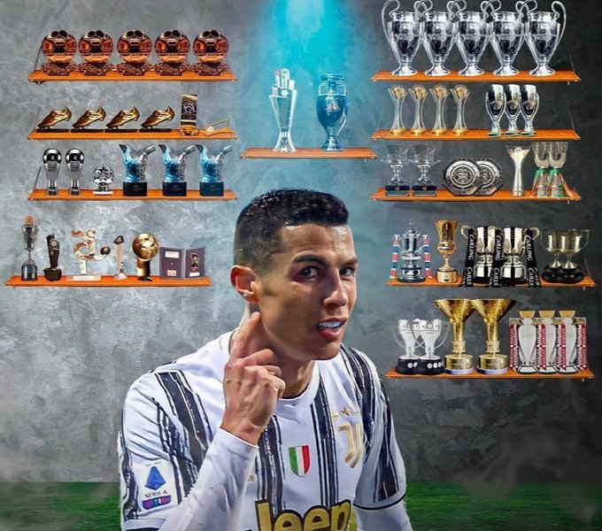

Logros
Sin duda alguna, Cristiano Ronaldo es uno de los mejores jugadores de toda la historia, ha batido un montón de récords y ha conquistado las competiciones más grandes
a las que un futbolista se puede enfrentar. A continuación mostraremos todos los palmarés que el Portugués ha levantado a lo largo de toda su carrera futbolistica.
Trofeos a nivel de clubes y selección
En total, CR7 ya suma 34 estrellas a nivel de clubes y selección nacional. Cristiano Ronaldo ha ganado:
- 5 Champions League
- 1 Eurocopa
- 2 Liga de España
- 2 Serie A de Italia
- 3 Premier League
- 1 UEFA Nations League
- 2 Copa del Rey
- 1 FA Cup / Copa de Inglaterra
- 3 Supercopa de Europa
- 2 Community Shield / Supercopa de Inglaterra
- 2 Supercopa de España
- 2 Supercopa de Italia
- 1 Supercopa de Portugal
- 4 Mundial de clubes
- 2 Copa de la Liga de Inglaterra
- 1 Coppa Italia

Títulos a nivel individual
A nivel individual, Cristiano se ha hecho con 20 títulos:
- 5 FIFA Ballon d'Or
- 1 FIFA World Player
- 2 FIFA The Best
- 2 Onze d'Or
- 4 UEFA Best Player in Europe award
- 1 Premio Puskás
- 4 Botas de Oro
- 1 Golden Boy